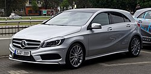
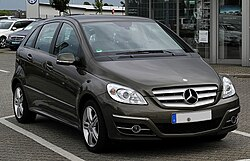

Krótki opis
Niemiecka marka samochodów, działająca od 1925 roku należąca do koncernu Mercedes-Benz Group, produkującego samochody osobowe i dostawcze. Ponadto korzysta z niej również przedsiębiorstwo Daimler Truck AG, które produkuje pod nią samochody ciężarowe, pojazdy specjalistyczne, autokary oraz autobusy. Historia marki Mercedes-Benz sięga lat 80. XIX wieku, kiedy to niezależnie od siebie Karl Benz i Gottlieb Daimler położyli podwaliny pod rozwój zmotoryzowanego transportu indywidualnego. W grudniu 1883 roku Benz założył w Mannheim spółkę Benz & Co., natomiast w listopadzie 1890 roku powstała w Cannstatt spółka Daimler-Motoren-Gesellschaft (DMG) należąca do Gottlieba Daimlera.

Rok produkcji: 2012–2018.
Rodzaj nadwozia: 5-drzwiowy hatchback.
Rodzaj silnika: benzynowy lub wysokoprężny (diesel).
Liczba cylindrów: 4, układ rzędowy.
Napęd: przedni lub na cztery koła (4MATIC).

Rok produkcji: 2005–2011.
Rodzaj nadwozia: 5-drzwiowy minivan (kompaktowy samochód rodzinny).
Rodzaj silnika: benzynowy, wysokoprężny (diesel) lub zasilany gazem ziemnym (NGT).
Liczba cylindrów: 4, układ rzędowy.
Napęd: przedni.